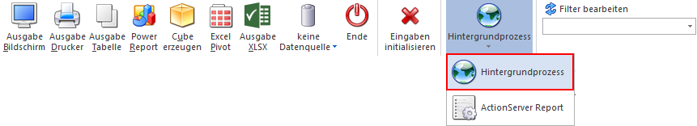
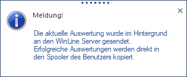
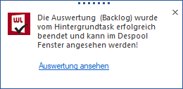
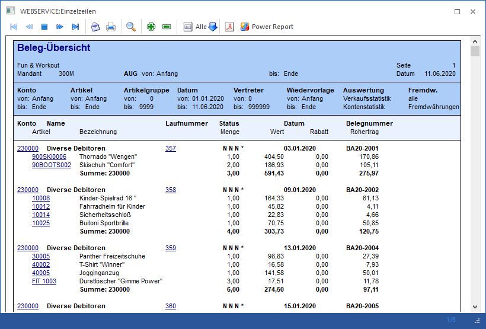
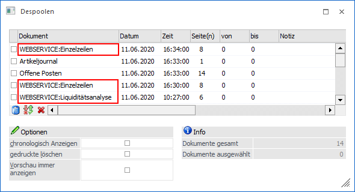

Wird in der gewünschten Auswertung der Button "Hintergrundprozess" gedrückt, so werden die Einstellungen des Fensters an den WinLine Server übergeben und dieser beginnt sofort mit der Aufbereitung / Bereitstellung der Daten.

Folgende Meldung wird dem Benutzer am Bildschirm angezeigt.

Im Anschluss daran kann in der WinLine "normal" weitergearbeitet werden und der Druck bzw. die Datenquellenaufbereitung läuft im Hintergrund weiter ab. Sobald der Ausdruck bzw. die Datenquelle inklusive Druck fertig ist, so wird eine weitere Meldung ausgegeben:

Durch Anwählen des hervorgehobenen Links "Auswertung ansehen" wird die entsprechende Auswertung direkt in der WinLine geöffntet.

Wird der Ausdruck nicht sofort geöffnet, so bleibt dieser im Despooler vom Benutzer bestehen und kann jederzeit im nachhinen geöffnet werden. Diese Ausdrucke, welche über den Hintergrundprozess erzeugt wurden, werden extra mit "WEBSERVICE:" gekennzeichnet.
